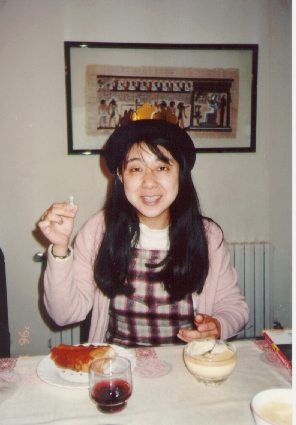

スペイン旅行３ (96.1)
つれづれ

|
今日載せるつもりだった写真をスキャンしに学校へ行ったら、なんとスキャナーが使えませんでした(;o;)。ウィルスにやられたそうです。それで、今回はあきらめて以前、試しにとっておいたものの中からこの写真を選ぶことにしました。これもスペイン旅行の時のものです。 さて、前回のスペイン旅行２・バルセロナで知り合ったＫさんが帰ったあとも私のバルセロナ滞在は続きました。Ｋさんと別れた次の日は、やはり歩いて行ける距離にあるシイタデラ公園に行き、朝の散歩を楽しんだ(^-^)あと、現代美術館へ行きました。ここには知っている絵はほとんどなく、一通りまわったに過ぎなかったのですが、途中、警備員に「日本人ですか？」と日本語で聞かれました。私は「そうだ」と答えて、でもニューヨークから来たことを伝えると、彼もニューヨーク出身ということで少し話しました。スペインが好きで、ここで仕事（警備員）を見つけたので住むことにしたそうです。いつかは日本にも行ってみたくて日本語を勉強しているそうです。 話しているうちに私が手にしているカメラを見て、「カメラは禁止です」と日本語で言いました。アメリカやヨーロッパで私の知っている限り、カメラを禁止しているところはほとんどないので「めずらしいですね」とポケットにしまうと、「どうして『カメラは禁止です』と言うと日本人は皆、写真を撮るのをやめるのですか？」と聞いて来ました。よく聞いてみると彼は、「フラッシュは禁止です」と言いたかったのです。フラッシュならどの美術館も禁止しています。それで「日本は写真を撮っちゃいけない記念館や美術館がたくさんあるから、日本人に『カメラは禁止です』と言ったら、皆やめてしまうよ」と教えてあげると、「フラッシュは禁止です」と自分の手帳に書き換えていました。「どうして日本の美術館は写真を撮っちゃいけないのですか？」と聞いてきました。「うーん、写真を許可したら自分達の販売している絵葉書が売れなくなっちゃうと思ってるんじゃないかな．．」と言っておきましたが、実際のところどうなのでしょう？(^^;、、彼もアメリカやヨーロッパで写真を撮っちゃいけない美術館は知らないそうです。 このあと、ミロ美術館、ピカソ美術館、バルセロナオリンピックの競技場を見てまわりました。途中雨が降ってきたのですけど、私は元旦にマドリッドで傘を盗まれる、というまぬけな目にあっているので(^^;傘はなく、濡れながら歩きましたが春の雨は気持ちよかったです。 さて、この写真ですが、これは実は身体の調子がピークに悪い時にバルセロナから２時間ほどのリャンサいう町に住んでいる友人のマルセルの家で撮ったものです。着いた日に夕食にも呼ばれ、これは次の日の昼間、今度は昼食に呼ばれたときのものです。 |

=スペイン旅行３(96.1)=
|
デザートのパイはマルセルのお母さんが焼いてくれました。これはマルセルの住んでいる地域の伝統のお菓子で、パイの中にお釈迦様みたいな小さな石でできた何かが入っているのです。皆に切り分けるのですが、その小さなものを引き当てた人は王様になり、冠をもらうことができます。そしてなんと、私がそれを引き当てたのです。帽子は私のです（私はいつもかぶっています。）。もらったのはこの紙でできた冠です(^^;。 この写真、私は笑っていますが、実はこの時ほとんど意識がなく、目の焦点も私の側からは合っていません。なぜかというと、前日までの無理がたたって前夜から、私は歯が痛み出していたのです。ですから私は、このパイもフランも見えていず、ワインにも口をつけていません。フランは少し食べたような気がしますが、味はもちろん覚えていません。「泣き面に蜂」とはこのことでしょうか？デザートは私の大好きなものなのに、ほとんど見えなかったのです。あとになってこの写真を見て、本当においしそうなので今でも残念でなりません。それにしてもあんなにつらかったのに、写真の私の顔にはここまで何も現われていないのにはびっくりしました。 歯がこのような目に合うことはわかっていました。私はこの前年の夏に歯医者さんへ行き、「あと２年もつ”かもしれない”。今、いじると多分、根元もなくなる。差し歯にするのはできるだけ遅い方がいいと思うけど、今治療したいか？」と聞かれました。そして私は「今はしない」方を選んだのです。歯医者さんには「半年に一度くらいの割合で傷むと思うけど、自分をだましだまし頑張りなさい」と言われました。でも、でも、、、、、まさか、パイとフランが食べられなくなるなんて、、、ワインだって前日のはすごくおいしかったので、このワインもきっと、、、(;o;)(;o;)(;o;) |
[ホームへ] [写真一覧へ]